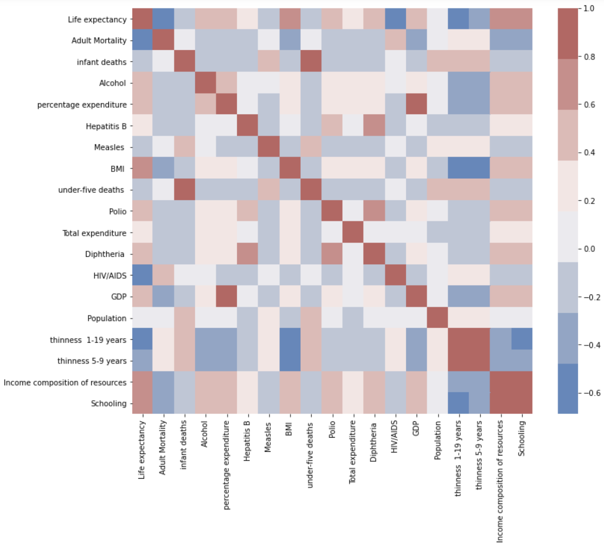

Life Expectancy Analysis Visualization
By: Mengchen Gong
I retrieved this dataset from Kaggle. This data has 22 columns and 2938 rows originally before clean. Since the main attribute I'm looking at is `Life expectancy`, I deleted all the rows with NaN in column `Life expectancy`, which made the total number of rows decreased to 2938.
Life Expectancy (WHO) data set contain 2000-2015 datas for 183 countries after data clean. With all different attreibutes related to immunization factors, mortality factors, economic factors, social factors and other health related factors.
My central question is:
What is the life expectancy look like in this 15 yeas, and how different factors affect life expectancy positively or negatively? Specifically, I will look into 3 different parts:
- General trend of World average life expectancy by year, and by country
- What are the attributes has negative/positive correlations to the life expectancy
- Based on the above analyze, take a closer look at life expectancy correlations with "Schooling" and "percentage expenditure"
Source Cited: Life Expectancy (WHO) Statistical Analysis on factors influencing Life Expectancy
Mean Life Expectancy by Country
The plot below showed the average Life Expectancy by `Country` in descending order.
For all 183 countries with valid `Life expectancy` data，I grouped the data set by `Country` and calculate the mean life expectancy for each country over the 15 years. Using histogram (bar chart), I ploted all countries' mean life expectancy in decreasing order.
The red line across the bar chart is the world average life expectancy. By Calculating, among 183 countries we are plotting, there are 109 countries' mean life expectancy is above world average, which is about 69.224.
Move mouse to specific bar for more information.
Attributes Pair-wise Correlation Heap Map

Below is a correlation heatmap from Searborn, which provide a overview of pairwise attribute correlations. I used this heat map to find out any positive/negative correlations other attributes have with `Life expectancy`
Red cell means the corresponding 2 attributes are positively correclated and blue cell means they are negatively correlated. We can see:
- Obviours Positive Correlation Attributes: Alcohol, percentage expenditure, BMI (Body mass index), Diphtheria, GDP, Income composition of resources, Schooling.
- Obvious Negative Correlation Attributes: Adult Mortality, HIV/AIDS, thinness 1-19, thinness 5-9 years
Scatter Plot with Colors, Sizes, and Shapes
Difference from original Story: Here I only used the life expectacy data for the most recent years for all the countries, so there is a lot less dots in the plot. It is easier to see individual countries' information.
With the mined information above, I picked out GDP, thinness 1-19 years, Schooling out for more in-depth analysis. I also add in "status" into the analysis, which status here is a ordinary attribute showing whether it's a developed country or developing country.
Here is a breakdown of all elements in the plot:
- x-axis: contries' GDP
- y-axis: life expectancy
- colors:
- red: little schooling
- purple: high schooling
- size : thinness 1-19 years
- shapes:
- circles: Developed Country
- squares: Develiping country
From the graph, we can see that:
GDP: High GDP correspond to long life expectancy, not low GDP doesn't necessary mean a short life expectancy. some low GDP countries has high life expectancies as well.
Schooling: Schooling is highly correlated to life expectancy. On the scatter plot, all the ones with high y-value (life expectancy) has colors on the purple end.
Thinness 1-19 years: We can see that first more developing countries has higher thinnness 1-19 years compared to developed country. It is negatively correlated with life expectacy.
Status (Developing/Developed country): developing countries are more likely to have short life expectancies, but there are still a lot developing countries has long life expectancy. Similar to GDP, developed country in general has a long life expectancy, not status developing doesn't mean a short life expectancy.
Move mouse to individual dots for more information; Zoom in to take a closer look for dense areas.
Multi-panel Scatter Plot with Linked Brushing
This part is totally new from the original story
In this part of the analysis, I took out 2 attributes, which are schooling and thinness 1-19 years, By doing the side by side scatter plot with linked brush, I'm able to select dots on the left panel and see where are the dots in the right panel.
We can see that more clear that "Schooling" is positively correlated to life expectancy. ON the other hand, "thinness 1-19 years" is negative correlated to life expectiancy. By "brush" (click&hold to select the dots with high schooling), we can see that countries with high schooling has lower thinness 1-19 years.
Hover to see each dot's detail, click and drag to select dots on left or right panel, you will able to see the corresponding dots on the other one.